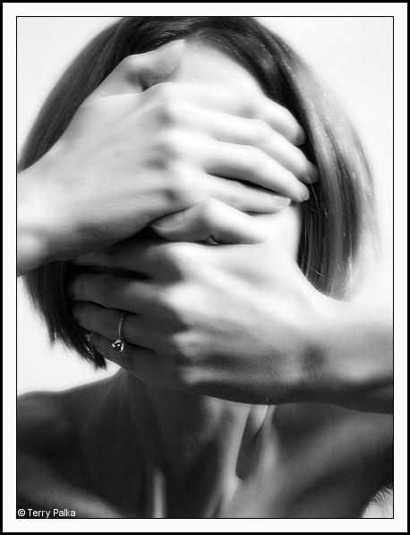

پذيرش > سایت نوشته ها > قتل هاي ناموسي در حال جهاني شدن
 خشونت علیه زنان خشونت علیه زنان

 قتل هاي ناموسي در حال جهاني شدن قتل هاي ناموسي در حال جهاني شدن
20 آبان 1387 - روزنامه اعتماد / ليزا آنزايا :ترجمه؛ عبداللطيف عبادي - نسخه قابل چاپ
خانم کتا پولايت منتقد اجتماعي در امريکا، داستان زندگي و چگونگي قتل دلخراش دختري 17ساله را در مجله «نيشن» شرح مي دهد که چگونه در بهار سال گذشته و در شمال عراق کشته شد. او تيتر نوشته اش را اينچنين برگزيده است؛ «به کدامين گناه؟ به جرم عاشق مردي نامناسب شدن؟»
کتا پولايت مي نويسد؛ فيلمي که از صحنه کشتن دعا خالد گرفته شده بود به سرعت در اينترنت و در نتيجه همه جاي دنيا پخش شد. کشتن دعا خالد در واقع بخشي از پديده يي اجتماعي است که آن را اصطلاحاً «قتل ناموسي» مي نامند. سازمان ديده بان حقوق بشر قتل ناموسي را اين گونه تعريف مي کند؛ «اقدامي خشونت بار و بي رحمانه براي کشتن يک زن يا دختر به دست مردي از اعضاي خانواده اش که حس کرده است به خاطر اعمال آن دختر يا زن آبرو و حيثيت خود و خانواده اش زير سوال رفته است.» سازمان ملل نيز همين تعريف را براي قتل هاي ناموسي پذيرفته است. يک زن يا دختر مي تواند بنا به دلايل مختلفي متهم به بي آبرو کردن خانواده اش شود. تسليم نشدن به يک ازدواج اجباري، قرباني شدن جنسي، گريز از منزل و نيز طلاق گرفتن يا اعلام تصميم براي جدا شدن از شوهر (حتي اگر آن شوهر مرد بدي باشد) به سادگي مي تواند از سوي اعضاي مرد خانواده به عنوان واقعه يي که باعث شرمساري و آبروريزي همه خانواده شده است، تلقي شود. در اين صورت زن يا دختر نگون بختي که مرتکب يکي از آنها شده يا حتي متهم به ارتکاب آنها شده باشد، ممکن است براي حفظ آبروي مردهاي خانواده اش کشته شود.
در قتل هاي ناموسي قاتل غالباً برادر، پدر، عمو، دايي يا مردي از اقوام و دوستان خانوادگي زن يا دختري است که کشته مي شود. در تحقيقي از سوي موسسه «عدالت براي خانواده هاي قربانيان قتل هاي ناموسي» مشخص شد در کشورهايي که قتل هاي ناموسي در آنها به وقوع مي پيوندد، پليس و قوه قضائيه آن کشورها از انجام قتل هاي ناموسي و کشتن زناني که متهم به فساد اخلاقي يا بي آبرو کردن خانواده شان بوده اند، چندان هم ناخشنود نيستند و براي حفظ جان زنان و دختراني که از سوي شوهر، برادر، پدر يا آشنايان خود در معرض خطر و تهديد جاني قرار دارند، عملاً کاري نمي کنند. قتل هاي ناموسي معمولاً در مناطق روستايي يا خانواده هاي فقيري که ريشه روستايي يا وابستگي هاي عشيره يي دارند، اتفاق مي افتد. مطالعات جامعه شناختي نشان مي دهد قتل هاي ناموسي غالباً اقدامي هستند که اعضاي مرد يک خانواده براي جلب رضايت اجتماع و محيطي که در آن زندگي مي کنند انجام مي دهند. به عبارتي واضح تر، شوهر، برادر يا پدري که همسر يا خواهر يا دختر خودش را مي کشد در حقيقت اين کار را نه براي رضاي خاطر خود بلکه غالباً براي خشنودي اقوام و آشنايان و اهل روستا يا محل يا اعضاي طايفه و قبيله اش انجام مي دهد تا در ميان شان احساس سرافکندگي و شرمساري نکند.
اما نوع ديگري نيز از قتل هاي ناموسي هستند که به آنها «خودکشي حيثيتي» مي گويند. در اين قتل، دختر يا زني خودش را مي کشد تا ديگران راضي شوند. يعني گاه اعضاي خانواده دختر يا زن او را تحت چنان فشارهاي روحي و اذيت و آزارهاي رواني قرار مي دهند يا آنچنان حق انتخاب هاي عاطفي را از زن يا دختري نگون بخت و بي پناه مي گيرند که او براي نجات از آن همه زجري که تحمل مي کند ديگر راهي به جز خودکشي نمي بيند. در اين حالت اگرچه قرباني خودکشي کرده اما مسبب و عامل مرگ او اطرافيانش بوده اند که نمي خواستند او را زنده يا به گونه يي که خود دوست مي داشته است، ببينند. قتل هاي ناموسي اکنون در حال فراگير شدن و به تعبيري ديگر، جهاني شدن هستند. شمار کشورهايي که در آنها زنان و دختران را بنا به دلايل ناموسي مي کشند يا وادار به خودکشي مي کنند از حد فزون شده اند. بنا به گزارشي که «کارزار مبارزه عليه قتل هاي ناموسي در جهان» منتشر کرده است، در سال گذشته اين جنايت هولناک در 52 کشور جهان رخ داده است. با شگفتي بسيار مشخص شد در کشورهاي پيشرفته يي مانند آلمان، هلند، امريکا، انگلستان، سوئيس و سوئد نيز قتل هاي ناموسي اتفاق افتاده اند، هرچند که غالب اين جنايت ها در خانواده هاي مهاجر و غيربومي اين کشورها رخ داده اند.
قربانيان قتل هاي ناموسي البته هميشه زنان و دختران روستايي يا خانواده هاي فقير و از طبقه فرودست جامعه نيستند. قتل شاهزاده مشعل بنت سعود از اعضاي خانواده سلطنتي عربستان سعودي 30سال است که در پرده يي از ابهام باقي مانده است و تصور غالب بر اين است که وي نيز قرباني يک قتل ناموسي شده است. گفته مي شود آن شاهزاده 19ساله حاضر نشد به ازدواجي تن در دهد که مي خواستند به او تحميل کنند و در نتيجه به دست عمويش و براي حفظ آبروي خانواده سلطنتي کشته شد. ياکين ارتوک - گزارشگر ويژه سازمان ملل متحد در امور زنان و خشونت - سال گذشته به کشورهاي بسياري سفر کرد تا گزارش جامعي را در زمينه خشونت عليه زنان و دختران جهان تهيه کند. او که خود اهل ترکيه است، در مقاله يي که در روزنامه «تورکيش ديلي نيوز» منتشر کرده، مي نويسد؛ «در قتل هاي ناموسي هميشه واژه ها و اصطلاحاتي مانند فرهنگ، آداب و رسوم، اخلاق و امثال اينها به عنوان بهانه هايي کارساز وارد ماجرا مي شوند تا خون ريخته شده يک زن يا دختر بي گناه پايمال شود و قاتل و جنايتکار از چنگال عدالت بگريزد. اگر ما جامعه خود را پيشرفته و مردم خود را مترقي مي دانيم، پس ارزش جان يک انسان بي گناه بايد برايمان بالاتر از هر عقيده و فرهنگ و هر باوري باشد که ادعا مي کنيم، داريم.»
در ارديبهشت سال گذشته و همزمان با انتشار خبر و فيلم قتل دلخراش دعا خالد الاسود در شمال عراق، زنان کردستان آن کشور در مراسمي پرشور عليه تفکر و جنايت «ناموس کشي براي حفظ حيثيت خانوادگي» دست به تظاهراتي گسترده زدند.
چيلوره هردي مدير سازمان هاي غيردولتي زنان در اربيل عراق مي گويد؛ «ما يک عمر است که عليه قتل هاي ناموسي و براي متوقف کردن آن و زدودن اين بينش غيرانساني در ميان مردم مان تلاش کرده ايم. ما دائماً با نوشتن مقالات مختلفي در روزنامه ها و مجلات کردستان عراق چهره زشت عقيده موسوم به ناموس پرستي و نيز جنايت ناموس کشي را به همگان نشان داده ايم. ما تصور مي کرديم اين باورهاي نادرست از سرزمين مان رخت بربسته اند اما وقتي دعا خالد را کشتند و فيلم قتل را ديديم، به اين نتيجه رسيديم که تا رسيدن به نقطه يي که به آن اميدوار بوديم هنوز راه درازي در پيش داريم. کشتن آن دختر مظلوم به دست خانواده اش زنگ بيدارباشي براي ما بود. اکنون همه هراس ما اين است که مبادا وضعيت جامعه مان از آنچه که هست، بدتر شود.»
اعتماد
ارسال به
بالاترین
،
توییتر
،
فریندفید
،
فیسبوک
در همين بخش :
 یک خبر تلخ؟ یک قانونشکنی؟ یک تصمیم بخشنامهای جدید؟ یک خبر تلخ؟ یک قانونشکنی؟ یک تصمیم بخشنامهای جدید؟
چرا بایست به سکسوالیته پرداخت؟ / نفیسه آزاد
آزارجنسی خانگی؛ «قربانی» نه، «نجات یافته»
زنان، بزرگترین بازندگان بهار عرب
سانسور از دیدگاه جنسیتی/الهه امانی
ديگر بخش ها :
طرح یک میلیون امضا
|
مقالات
|
سایت نوشته ها
|
اخبار
|
گزارش كمپين
|
گفت و گو
|
علیه سکوت
|
كوچه به كوچه
|
نامه های شما
|
گزارش ویژه
|
گفتگو با اعضا
|
ویژه سالگرد کمپین
|
تصویر برابری
|
دل آرام علی
|
تریبون
|
مقالات
|
تاریخ شفاهی
|
خارج از چارچوب
|
کتابخانه
|
درباره کمپین
|
کمپین در شهرها
|
کمپین در بند
|
صدای تغییر
|
ویژه 22 خرداد
|
لایحه حمایت از خانواده
|
گالری
|
عشا مومنی
|
امیر یعقوبعلی
|
خدیجه مقدم
|
راحله عسگری زاده و نسیم خسروی
|
پروین اردلان،جلوه جواهری، مریم حسین خواه، ناهید کشاورز
|
زینب پیغمبرزاده
|
سعیده امین، سارا ایمانیان، محبوبه حسین زاده، ناهید کشاورز و همایون نامی
|
احترام شادفر
|
نسیم سرابندی زاده،فاطمه دهدشتی
|
وبلاگ مهمان
|
پرونده خرم آباد
|
دستگیری ها
|
مریم مالک
|
پرستو اللهیاری
|
مهرنوش اعتمادی
|
سمیه رشیدی
|
Other Languages
|
همراهان
|
«فراخوان کمپین ده روز با بهاره هدایت»
| English
|